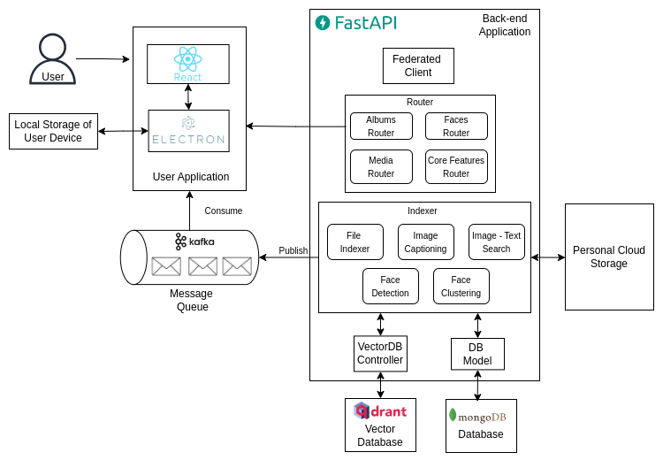

PicsSmart-Core
This component contains the core backend service of the PicsSmart application. This can be run as a standalone service in the client machine.
Application Architecture
The Application Architecture is illustrated in the below diagram.

Deploying
Clone the repository
git clone https://github.com/PicsSmart/picssmart-core.git
Prerequisites
- Conda
- Docker
Install the dependencies and enabling services
./setup-env.sh <conda-env-name>
You may define the name of the conda environment you want to create.
- With this script, all the dependencies will be installed and below required services will be up and running as docker containers.
- MongoDB
- Mongo Express (Optional)
- Qdrant Vector Database
- Kafka Broker
- Zookeeper
How to run the server
- Add a
.envfile as in below format inside theserverfolder
mongo_db_host = "localhost"
mongo_db_port = 27017
mongo_db_user = "picssmartadmin"
mongo_db_password = "picssmartpw"
mongo_db_database = "picssmart"
mongo_db_auth = "admin"
qdrant_host="localhost"
qdrant_port=6333
qdrant_collection="picssmart"
server_address_federated="127.0.0.1:8080" # Address of the federated server
- After that server can be run using below command
uvicorn server.__main__:create_app --factory --reload
Clean DB entries
- To clean the database entries, run the below command
python clean.py